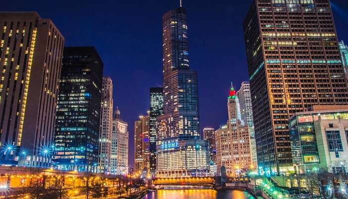
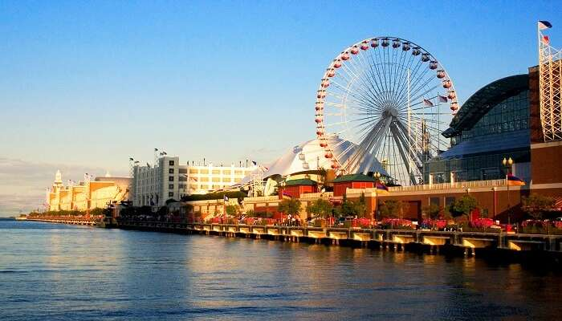
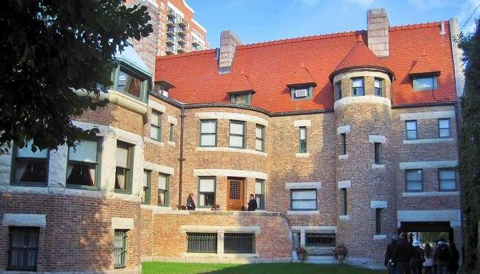

Known for hosting the concerts and festivals, this is one of the most popular Chicago
attractions which is all about the city’s weekend vibe. You’ll find interesting sculptures and contemporary
installations all over this 25-acre park while taking an evening stroll. The Millenium Park is definitely
one of the best places to visit in Chicago for all kinds of tourists.

River Walk
When it comes to Chicago sightseeing, taking a stroll along the Riverwalk
is totally mandatory. One can adore the city lights next to the Chicago
river while choosing your dinner menu from a range of bars, pubs and restaurants. The Riverwalk
has some of the best restaurants in Chicago and the other amazing places to go in Chicago
can easily be explored via Water Taxi.

Navy Pier
For a relaxed evening, drop by the Navy Pier which boasts of a Giant Ferris Wheel,
a beer garden, and live entertainment. If you’re thinking about what to see in Chicago, you can listen
to live music by the pier or attend one of the classic plays at the renowned Chicago Shakespeare Theatre.
A number of restaurants and take-out places at the Navy Pier makes it one of the best places to visit in Chicago.
Lincoln park Zoo
In Chicago, places to visit are so many that it won’t disappoint you.
Bring back your childhood memories with a trip to the infamous Lincoln Park Zoo, especially
if you’re a nature and an animal lover. Located in the middle of the city and surrounded by
skyscrapers and buildings, this prime location happens to be one of everyone’s favourite places
to visit in Chicago.

Glessner House
One of the top architectural places to visit in Chicago, the Glessner House is a popular
landmark in the State of Illinois. There are different tales associated with this timeless monument
while the museum inside contains unbelievable collections of 19th Century life. An inspiration
to domestic architecture, the Glessner House is a fortress waiting to be explored by tourists.
Crown Fountain
Being one-of-a-kind installations in the city, this fountain is a 50-foot glass block which
projects the images of the locals while the water flows through an outlet strategically
placed at the mouth of the installation. This 21st century art is clearly one of the
spectacular places to visit in Chicago that is located in the Millenium Park.
Chicago History Museum
With over 20 million artifacts, this museum is an important part of Chicago’s tourist
destinations. Needless to say, if you appreciate history, you will find an abundance of sites to visit
within this museum. Be it the hands-on model of the Hancock Building or the real story behind the Great
Chicago Fire, there’s a lot more to this museum being one of the best Chicago’s places to visit than
what meets the eye.
Shedd Aquarium
Closer to the Lake Michigan, resides a very popular tourist attraction of Chicago-the Shedd Aquarium.
As one of the largest aquariums in the world, this indoor setup is the place to spend a special afternoon with your
family, especially children. From Beluga whales to white-sided dolphins, you can witness over 1500 mammals and
fishes here, which makes it one of the most exciting places to visit in Chicago.